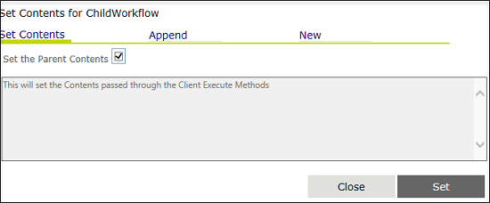
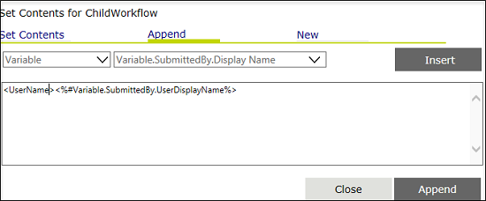
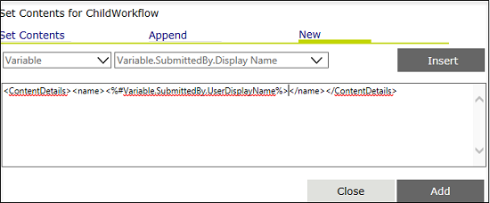

No
Contents for ChildWorkflow Property window
You can specify the contents to be passed to the child workflow in this property window. To open this window, click the button for the 'Contents for ChildWorkflow' property.
The window has three tabs – Set Contents, Append, and New – to specify the contents to be passed to the child workflow. Each tab opens the corresponding window to specify the content to set.
The following image shows the Set Contents tab of the Contents for ChildWorkflow property dialog box:

The window shown above is displayed when the Set Contents tab is clicked. It is the default selection and is opened when this property window is launched. You can pass the contents that are passed through the Client. Execute Method to the child workflow in this window. You can click the Set the Parent Contents check box to do this. You can click Set to set the parent variables.
The following image shows the Append tab of the Contents for ChildWorkflow property dialog box:

The window shown above is displayed when the Append tab is clicked. You can append values to the parent workflow contents in this window. This window has two drop downs for selecting the value type (Variable or Content) and the value respectively (Variable or Content collection). After specifying the values, you can click the Insert button to add it to the text area.
Click Append to append all the specified values to the parent workflow contents being passed to the child workflow.
The following image shows the New tab of the Contents for ChildWorkflow property dialog box:

The window shown above is displayed when the New tab is clicked. You can add new content values to be passed to the child workflow in this window. This window has the value type (Variable or Content) and value (Variable or Content collection) drop downs for selecting the respective options. After specifying the values, you can click Insert to add it to the text area.
You can click Add to add all the specified values to be passed to the child workflow.